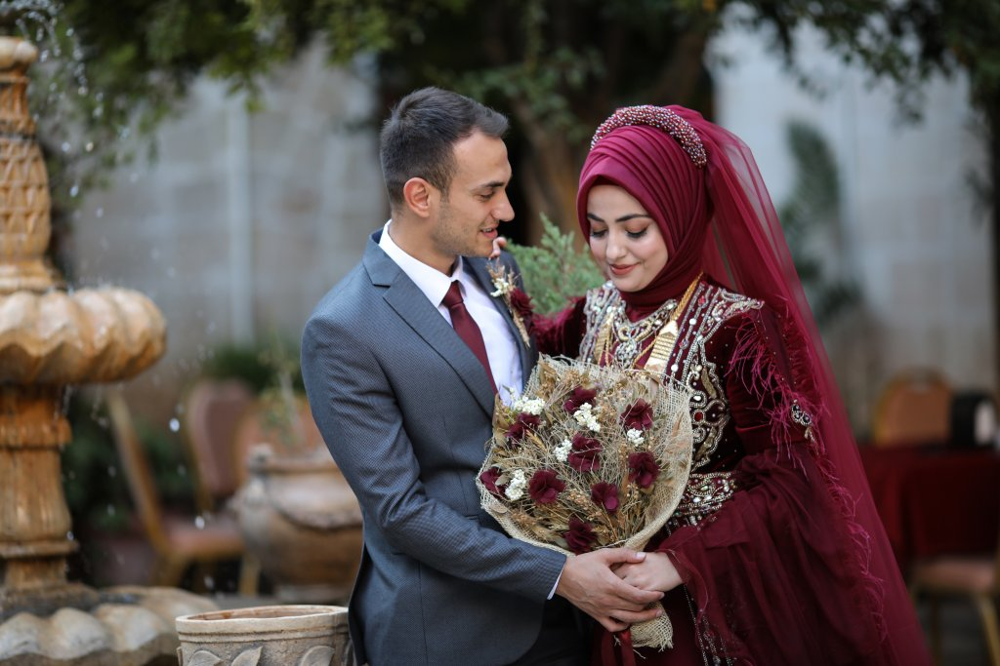

Tercihe bağlı olarak mekan zaman ayarlandıktan sonra düğün öncesi
klip ve hikaye çekimlerine gimbal ve dron ile başlarız. Düğün başlarken
gimbal, video kamera ve fotoğraf makinası ile düğün bitimine kadar çekim devam eder.
Kına | Klip | Kına Hikayesi

Tercihe bağlı olarak mekan zaman ayarlandıktan sonra kına öncesi
klip ve hikaye çekimlerine gimbal ve dron ile başlarız. Kına başlarken
gimbal, video kamera ve fotoğraf makinası ile kına bitimine kadar çekim devam eder.
| Sünnet | Klip |
Tercihe bağlı olarak mekan zaman ayarlandıktan sonra sünnet öncesi
klip ve hikaye çekimlerine gimbal ve dron ile başlarız. Düğün başlarken
gimbal, video kamera ve fotoğraf makinası ile sünnet bitimine kadar çekim devam eder.